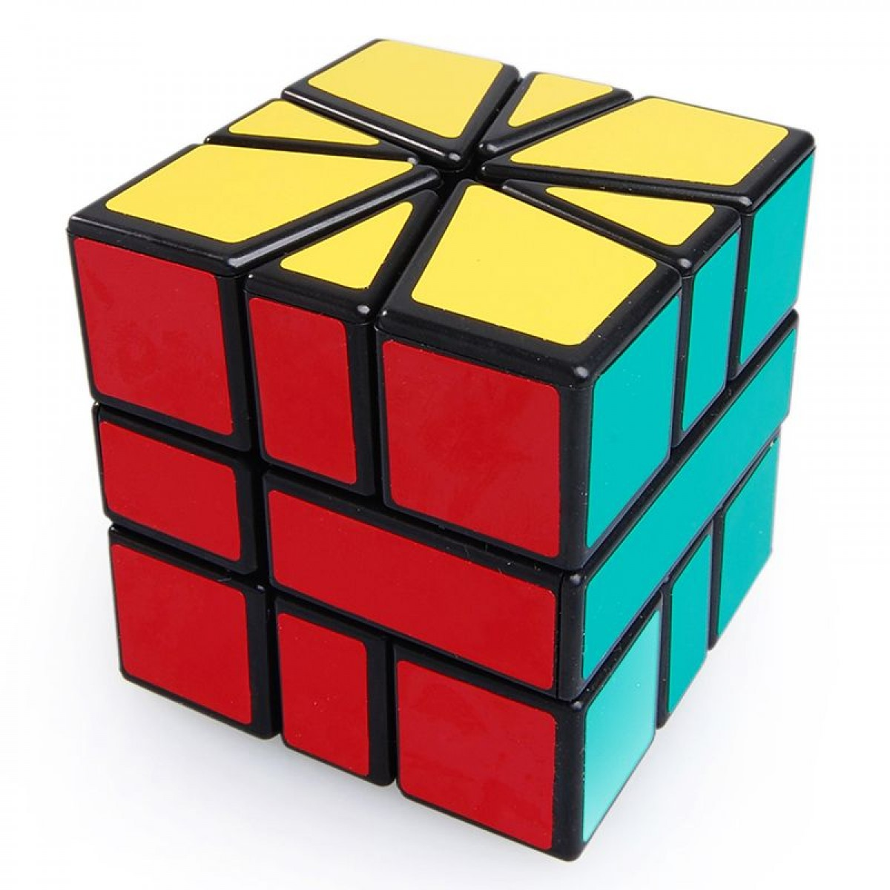
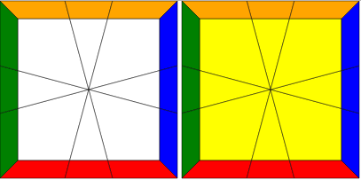
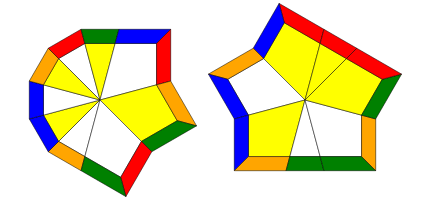
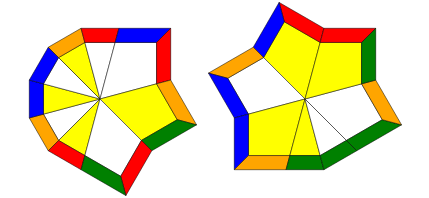
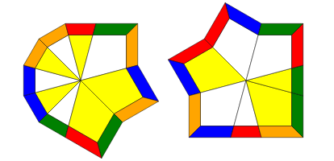
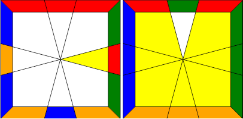
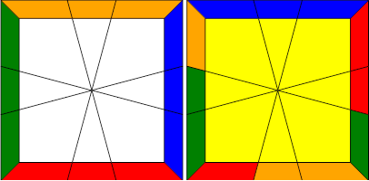
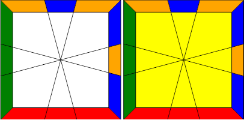
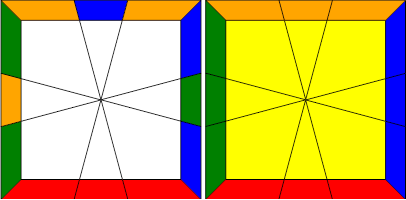
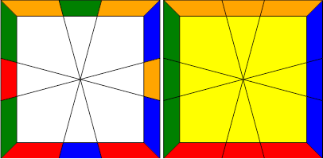

		<div class="text">
			<div class="container">
				<h1>How to Solve a Square-1</h1><hr>
				<p>So you came here wanting to learn how to solve a Square-1, eh? Awesome! Let's get you started.</p>
				<center><h2>The Square-1</h2></center>
								
				<p>The Square-1 is a rather unusual puzzle for those initially beginning to cube. Unlike a 3x3 Rubik's Cube, the Square-1 features abnormally shaped edges and corners, and by playing with the puzzle, we can see that the edges and corners can actually interchange positions.</p>
				<p>The ability of the Square-1 to change into positions that are not cubic-shaped is what drives many away from learning how to solve it. In reality, the Square-1 is not that difficult of a puzzle, as we will see later.</p>
				<p>If you are learning how to solve a Square-1, I presume you know how to solve a regular Rubik's Cube. If not, that's okay, but the tutorial might be a little harder to follow. Besides, you should learn how to solve the normal 3x3 cube before learning how to solve Square-1 anyway!</p>
				<center><h2>Video Tutorial</h2></center>
				<p>If you're more of a visual learner rather than reading text, I put together a video tutorial on how to solve a Square-1. The video covers mostly the same content as this text tutorial. </p>
				<center><iframe width="560" height="315" src="https://www.youtube.com/embed/Ds2lC5bVui4" frameborder="0" allowfullscreen></iframe></center>
				<p>However, if you would much prefer using this text tutorial, then read on!</p>
				<center><h2>Credits</h2></center>
				<p>Much of this tutorial would not be possible without support from many viewers who have given feedback about my video tutorial over the years. I also would like to acknowledge <a href="https://www.worldcubeassociation.org/results/p.php?i=2014NURU01">Jabari</a>'s <a href="http://pzl.azurewebsites.net/generator?puzzle=sq1">Square-1 image generator</a> for the images on this site.</p>
				<center><h2>Basic Foundations and Terminology</h2></center>
				<p>The way you want to hold a Square-1 is with the star-esque shapes on the top and bottom layers. The middle layer should be in a position such that the smaller rectangle is on the left rather than the right. If your middle layer has the smaller rectangle on the right; you are holding it wrong, flip the cube over so that it is on the left.</p>
				<p>Your color scheme may differ from mine (I hold black/white top and red front), but no matter what you should be holding the small rectangle on the left. If you are a lefty, then you may opt to have it on the right, and follow this tutorial by simply mirroring the algorithms.</p>
				<p>Now note there are only three ways you can turn the Square-1: the top face, the bottom face, and the "right" face, which can only be turned 180 degrees. For this reason, the notation we use in Square-1 solving is using a coordinate pair to represent how much to turn the top and bottom faces by and a forward slash (<b>/</b>) to represent an 180 degree turn of the so-called <b>slice</b>.</p>
				<p>The coordinate pair representing the top/bottom movement represents the number of 30-degree intervals you must turn the top and bottom. The first number is for the top face and the second number is for the second face. A positive number represents a clockwise turn, and a negative number represents a counterclockwise turn.</p>
				<p>This notation takes a while getting used to since it is different from normal 3x3 notation. Try the following examples:</p>
				<ul>
					<li><p><b>/3,0/1,0/0,-1/</b></p>
						<ul>
							<li><p>Each "<b>/</b>" will represent an 180 degree turn of the slice. <b>3,0</b> means you move the top face 90 degrees clockwise. <b>1,0</b> means you move the top face 30 degrees clockwise, and <b>0,-1</b> means you move the bottom face 30 degree counter-clockwise.</p></li>
						</ul>
					</li>
					<li><p><b>-5,3/2,-1/4,6</b></p>
						<ul>
						<li><p><b>-5,3</b> would mean turn the top 150 degrees (2 corners and 1 edge) counterclockwise and bottom 90 degrees clockwise, etc.  
						</ul>
					</li>
				</ul>
				<p>If you don't want to remember this in terms of degrees, you can always remember that each corner has a value of 2 and each edge has a value of 1. Then, when you are performing a move corresponding to a certain number, you can count off the number based off the corner-edge values.</p>
				<p>Side note: the images should be viewed as if you were looking at your Square-1 from above. So the solved position of your Square-1 (assuming white top) red front would look like:
				<center></center>
				<center><h2>The Five Steps</h2></center>
				<p>There are five steps to solving the Square-1 (using the Vanderbergh method):</p>
				<ul>
					<li><p><i><a href="#cubeshape" class="smoothScroll">Cubeshape</a></i></p></li>
					<li><p><i><a href="#co" class="smoothScroll">Corner Orientation (CO)</a></i></p></li>
					<li><p><i><a href="#eo" class="smoothScroll">Edge Orientation (EO)</a></i></p></li>
					<li><p><i><a href="#cp" class="smoothScroll">Corner Permutation (CP)</a></i></p></li>
					<li><p><i><a href="#ep" class="smoothScroll">Edge Permutation (EP)</a></i></p></li>
				</ul>
				<p>From now on, I will be using these above abbreviations throughout the tutorial.</p>
				<div id="cubeshape">
					<center><h2>Cubeshape</h2></center> 
					<p>Cubeshape, as the name suggests, involves getting the puzzle back into a cube. There are various ways you can do this, but the one I will be teaching here is the simplest method; getting all 8 edges next to each like so (ignore the colors for now):</p>
					<center></center>
					<p>There's no other way to explain this step other than to experiment with the cube and try to bunch edges together. A good approach to go for is to first get 6 edges together and the remaining 2 edges on the other layer. Then you will have one of three cases:</p>
					<div id="cu1"><center><b>This case is simple, simply move the edges up.</b></center></div>
					<div id="cu2"><center><b>Also a simple case, move the edges up.</b></center></div>
					<div id="cu3"><center><b>You need to do this algorithm:<br><b>2,0/3,-2/0,2/</b></b></center></div>
					
					<p>Once this is the case, and you have all eight edges next to each other like the image above, you want to perform the following algorithm.</p>
					<center><p><b>/-4,-2/2,1/3,3/</b></p></center>
					<p>Once you perform this algorithm, your Square-1 should be back into a cube! Don't worry about the middle layer yet if it is flipped; we will take care of that in the end.</p>
				</div>

				<div id="co">
					<center><h2>Corner Orientation (CO)</h2></center>
					<p>CO will be the easiest step out of all five steps, which involves getting the corners on their respective layers. This can be done very intuitively, or you can follow the basic procedure listed here. Throughout this step (and EO) you should make sure to always have the top layer misaligned by <b>1,0</b>.</p>
					<ol>
						<li><p>Put 2 white corners on the left side of the top face, and make the other 2 corners yellow.</p></li>
						<li><p>You will have one of two cases:</p></li>
						<ol>
							<li><p>The white corners on the bottom are adjacent. In that case, bring up the corners to the top.</p></li>
							<li><p>The white corners will be diagonal. In that case, bring up one of the corners, and move the bottom face so that slicing will bring the corners adjacent.</p></li>
						</ol>
					</ol>
				</div>

				<div id="eo">
					<center><h2>Edge Orientation (EO)</h2></center>
					<p>EO involves putting the edges in their proper layer; at the end of this step the entire top face should be white and the bottom face should be yellow. We are essentially going to be swapping pairs of edges connecting edges in the two layers and swapping them; doing this repeatedly will get the pieces oriented.</p>
					<p>The basic procedure is: put a yellow edge on the top face on the right and a white edge on the bottom face in the back of the puzzle like so:
					<center></center>
					<p>Then, the algorithm you will need to swap these edges is:</p>
					<center><p><b>1,0/3,0/3,0/-1,-1/-2,1/-3,0/</b></p></center>
					<p>Repeating this for every mismatched edge you have in the top layer, you should now have both of your layers oriented!</p>
				</div>

				<div id="cp">
					<center><h2>Corner Permutation (CP)</h2></center>
					<p>CP involves permuting the corners correctly so that their side stickers match.</p>
					<p>We begin by permuting the corners of the bottom layer. You want to find two adjacent corners on the bottom layer that are already permuted correctly and place them in the back like so:</p>
					<center></center>
					<p>The algorithm to swap the two corners on the bottom front is:</p>
					<center><p><b>/3,-3/0,3/-3,0/3,0/-3,0/</b></p></center>
					<p>If you notice you don't have any permuted corners on the bottom but rather have to permute them diagnally, you can simply perform this algorithm once and you will have two adjacent corners permuted.</p>
					<p>Now if you wish to permute the corners on the top, all you have to do is swap the layers and do the same steps as above. The algorithm to swap the layers is:</p>
					<center><p><b>/6,6/</b></p></center>
					<p>Simple! And from here, we move onto the last step.</p>
				</div>

				<div id="ep">
					<center><h2>Edge Permutation (EP)</h2></center>
					<p>In EP, we will permute the edges and solve the rest of the cube. This step requires some thinking on how to do efficiently.</p>
					<p>The primary algorithm we will use is:</p>
					<center><p><b>-2,0/3,0/-1,-1/-2,1/2,0</b></p></center>
					<p>What this algorithm will do is swap the two adjacent edges in the back, for the top and bottom, like so:</p>
					<center></center>
					<p>Each layer will have its own separate permutation, and the goal is to slowly reduce each layer into a smaller and smaller case in order to finally solve the cube. You will need to see how to solve each permutation through a series of adjacent swaps. For example, a U-Perm like shown:</p>
					<center></center>
					<p>will need the back-right edges to be swapped first, and then the back-left edges to be swapped. Once you know how to solve each permutation through a series of adjacent swaps, then you can use the algorithm above to solve each layer simultaneously.</p>
				</div>

				<center><h2>Parity Errors</h2></center>
				<p>But wait...you might ask...what happens when the top requires an even amount of swaps and the bottom needs an odd amount (or vice versa)? This is a parity error, which results from the fact that the Square-1 can change shape.</p>
				<p>Unfortunately, fixing this error requires a long algorithm, but there are ways you can memorize this algorithm easily:</p>
				<center><p><b>/3,3/1,0/-2,-2/2,0/2,2/-1,0/-3,-3/0,2/-2,-2/2,0</b></p></center>
				<p>This algorithm will cycle the edges on the top layer counter-clockwise, which will solve this case:</p>
				<center></center>
				<p>The key to remembering this algorithm is:</p>
				<center><p><b><b style="color:red">/3,3/1,0/-2,-2/</b>2,0<b style="color:blue">/2,2/-1,0/-3,-3/</b>0,2/-2,-2/2,0</b></p></center>
				<p>The red and blue parts of the algorithm are simply the reversed of each other separated by a <b>2,0</b>. This should make remembering the algorithm a lot easier.</p>
				<center><h2>Flipping the Middle Layer</h2></center>
				<p>Flipping the middle layer is easy:</p>
				<center><p><b>/6,0/6,0/6,0</b></p></center>
				<center><h2>And that's it!</h2></center>
				<p>Those are all the tools you need to solve the Square-1!</p>
				<p>If you're wondering what the next steps are:</p>
				<ul>
					<li><p><b>More EO and CP Algorithms</b></p></li>
					<li><p><b>Advanced Cubeshape</b>: This is a faster way to get cubeshape done in an efficient manner.</p></li>
					<li><p><b>CP Lookahead</b>: You can influence what EP you get during the CP step.</p></li>
					<li><p><b>Parity Control</b>: This is by far the most advanced of these concepts. Methods include:</p></li>
					<ul>
						<li><p><i>CP Parity</i>: This involves fixing parity during CP, which minimizes the amount of EP algorithms you need to memorize.</p></li>
						<li><p><i>Full EP</i>: This involves memorizing all 99 EP algorithms.</p></li>
						<li><p><i>Cubeshape Parity (CSP)</i>: This involves fixing parity during the cubeshape step. Currently a method in development.</p></li>
					</ul>
				</ul>
			</div>

		</div>